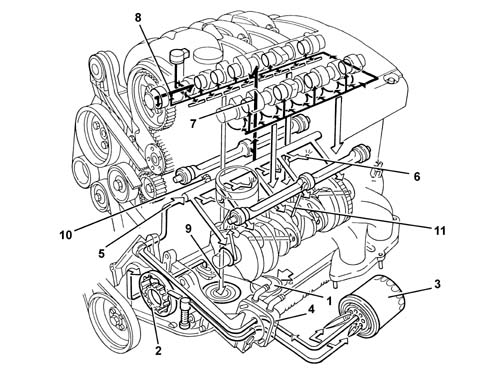
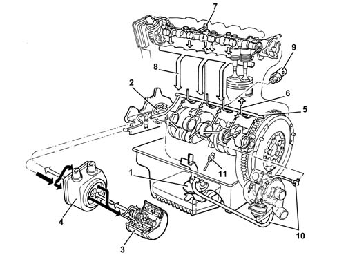
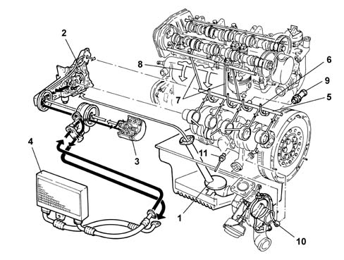

Introduction - ENGINE LUBRICATION SYSTEM
- Path
- Descriptions > 10 ENGINE > 1084 ENGINE LUBRICATION SYSTEM > Introduction - ENGINE LUBRICATION SYSTEM
- Kind
- system description
- Applies to
- engines: 1.6 TS, 2.0 TS, 1.9 JTD 8V, 1.9 JTD 16V; all production periods
- Interactive page
- https://sloeber94.github.io/elrnDB-a147/en/#/3026089
Applies to: engines: 1.6 TS; all production periods
CONSTRUCTION FEATURES
ENGINE LUBRICATION SYSTEM

1 - Suction pipe with filter mesh 2 - Oil pump 3 - Oil filter cartridge 4 - Water/oil heat exchanger (1.6 plus version only) 5 - Main longitudinal duct 6 - Piston skirt cooling jets 7 - Camshaft bearings vertical duct 8 - Phase transformer ducts 9 - Oil return to sump 10 - Switch for engine oil pressure warning light
Applies to: engines: 2.0 TS; all production periods
CONSTRUCTION FEATURES
ENGINE LUBRICATION SYSTEM

1 - Suction pipe with filter mesh 2 - Oil pump 3 - Oil filter cartridge 4 - Water/oil heat exchanger 5 - Main longitudinal duct 6 - Piston skirt cooling jets 7 - Camshaft bearings vertical duct 8 - Phase transformer ducts 9 - Oil return to sump 10 - Switch for engine oil pressure warning light 11 - Counter-balance shafts duct
Applies to: engines: 1.9 JTD 8V; all production periods
COMPOSITION
STRUCTURE
The engine lubrication system is represented below.

1 - Suction pipe with filter mesh 2 - Oil pump 3 - Oil filter cartridge 4 - Water/oil heat exchanger 5 - Main longitudinal duct 6 - Jets (piston skirt cooling) 7 - Vertical duct (camshaft support lubrication) 8 - Oil return to sump 9 - Engine oil pressure warning light switch 10 - Turbocharger lubrication pipes 11 - Engine oil level sensor
Applies to: engines: 1.9 JTD 16V; all production periods
COMPOSITION
STRUCTURE
The engine lubrication system is represented below.

1 - Suction pipe with filter mesh 2 - Oil pump 3 - Oil filter cartridge 4 - Engine oil cooling radiator 5 - Main longitudinal duct 6 - Jets (piston skirt cooling) 7 - Vertical duct (camshaft support lubrication) 8 - Oil return to sump 9 - Engine oil pressure warning light switch 10 - Turbocharger lubrication pipes 11 - Engine oil level sensor